Vance陈布凡
陈布凡(Vance)是来自北京师范大学的一位北航头马常客，星座狮子座，骨子里却是个处女座式的完美主义者。他爱运动、爱旅行——羽毛球、轮滑、骑行样样在行，江湖人称"轮滑、骑行，隔壁老陈"。2015年6月，他以破冰演讲《Sports make life better》登上头马舞台，从此开启了自己的成长之路。
从CC1到CC7，Vance一步步走得扎实：他讲过暑假旅行的见闻(CC2)、用《Be brave to do everything》鼓励大家勇敢迈出第一步(CC3)、用中文分享《时间管理》(CC4)、讲述海南环岛骑行的热血经历(CC5)，又以《Make It Better》道出自己作为完美主义者"好还能更好"的信条。同伴们记得，他曾在台上坦言自己最初害羞、不敢上台、不敢向喜欢的女生表白，而正是头马让他学会了"大胆地往前走"。
除了备稿演讲，Vance更是俱乐部里挑大梁的角色担当。他多次担任会议主持人(Toastmaster)，主持过"一生""Mask""Linguistic Charm""Real-time"等多场会议，也多次出任即兴演讲主持人(TTM)，设计"HERO""Sheldon Like"等妙趣横生的环节。2016年春季比赛，他作为英文演讲选手登台征战，是俱乐部里活跃的舞台多面手。圣诞晚会上他的双截棍表演在壮士与逗比之间反复切换，逗乐全场，被赞"颇有喜剧天赋"。
毕业走向工作岗位后，Vance仍心系头马。2017年元旦晚会上，他重回舞台接受俱乐部的小小送别，"经典式钟摆站立许久"，被伙伴们称作"追风少年——不凡的你"。对他而言，离开不是真正的告别，头马永远是他可以常回来看看的家。
闯关之路 · Competent Communication
做过的演讲 · 7 场
担任过的职责
里程碑
- 2015-06-19 破冰首秀以CC1《Sports make life better》完成破冰演讲，正式踏上头马舞台。
- 2015-11-20 首次担任会议主持主持第119次会议'一生'，开始承担俱乐部主持角色。
- 2016-03-11 登上比赛舞台作为英文演讲选手参加2016春季比赛。
- 2016-06-17 完成CC7以《Make It Better》完成CC7，演讲之路稳步推进。
- 2016-08-12 《Change myself》演讲分享对'改变自己'的理解，行走是一种态度。
- 2017-01-06 毕业告别工作后重回元旦晚会，接受俱乐部送别，被称'追风少年——不凡的你'。
为俱乐部做的事
- 多次担任会议主持人(Toastmaster)，串联多场主题会议
- 多次出任即兴演讲主持人(TTM)，设计趣味问题活跃现场气氛
- 代表俱乐部参加2016春季英文演讲比赛
- 在圣诞晚会等活动中表演双截棍等节目，活跃俱乐部氛围
- 以《Be brave to do everything》等演讲鼓励新人勇敢上台
- 毕业后仍心系俱乐部，重回头马参与活动
照片墙 · 时间线
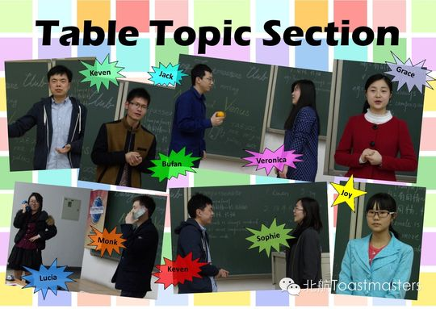
✓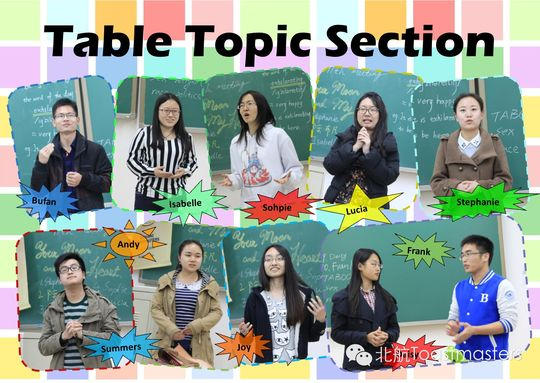
✓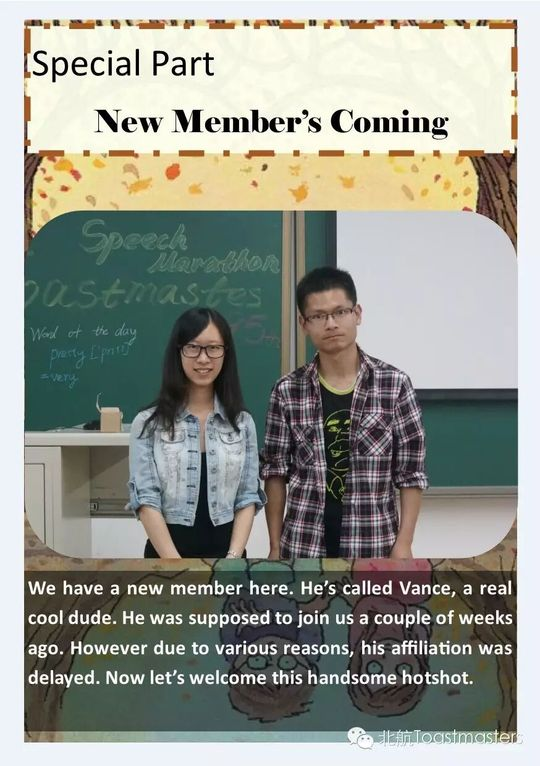
✓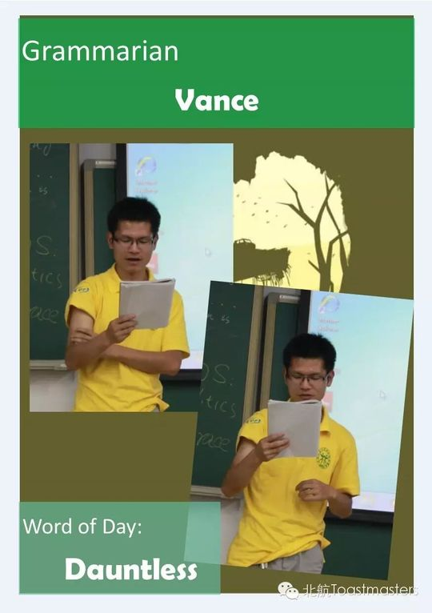
✓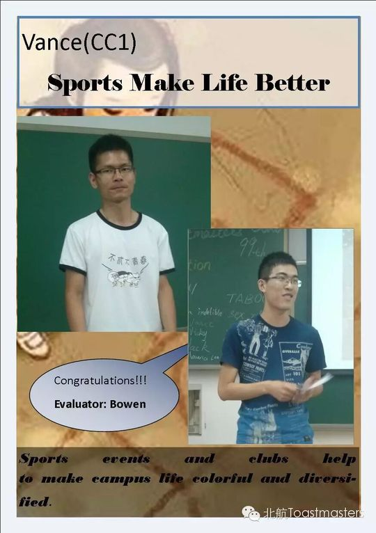
✓ ✓
✓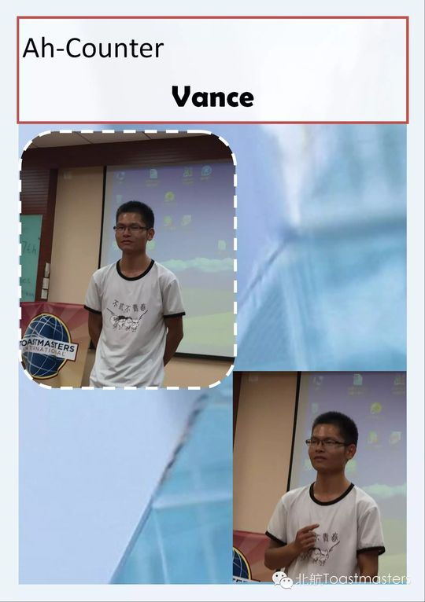
✓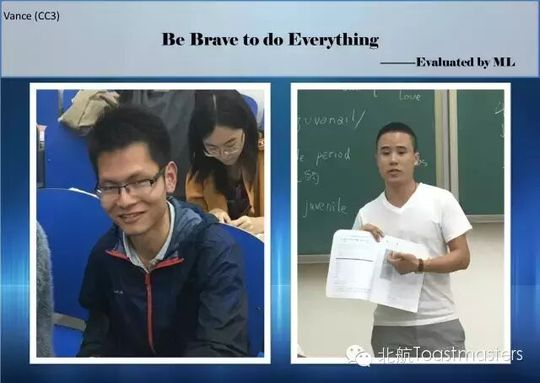
✓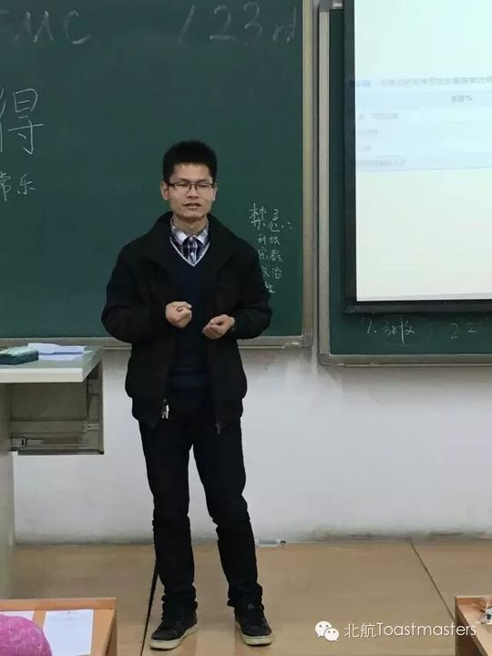
✓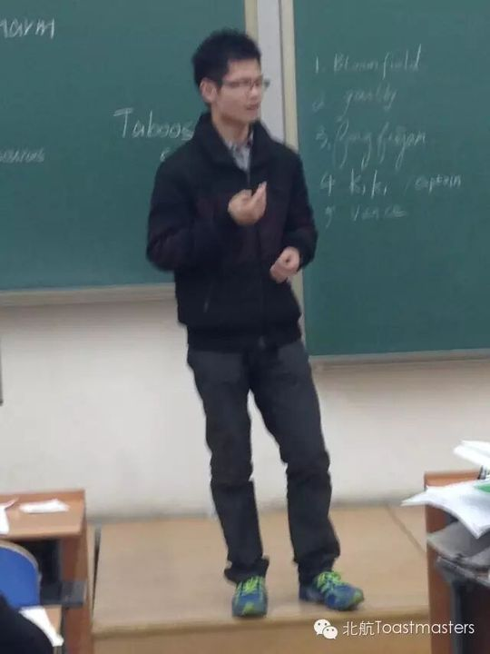
✓ ✓
✓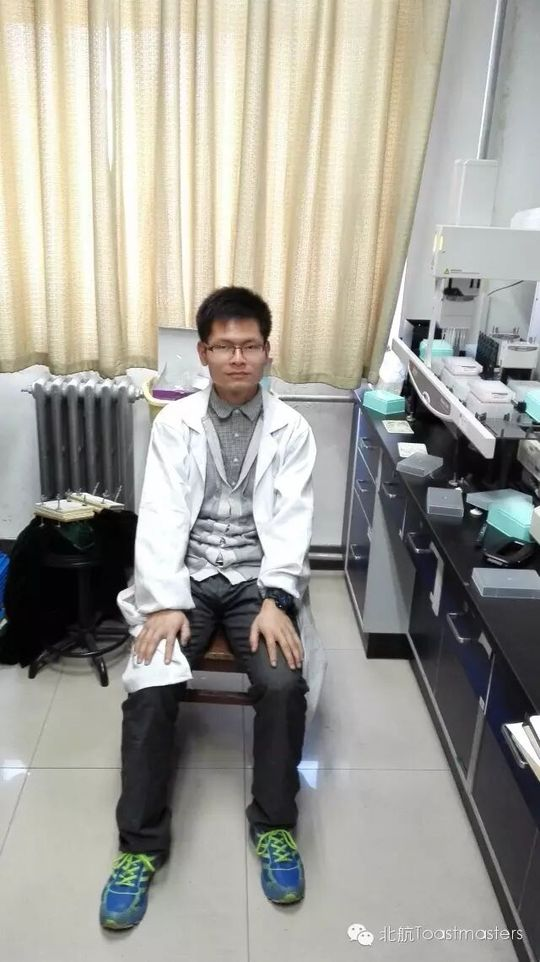
✓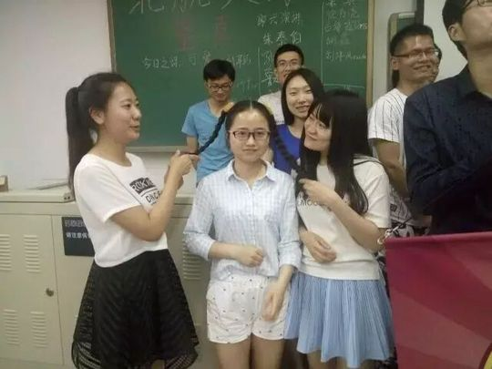
✓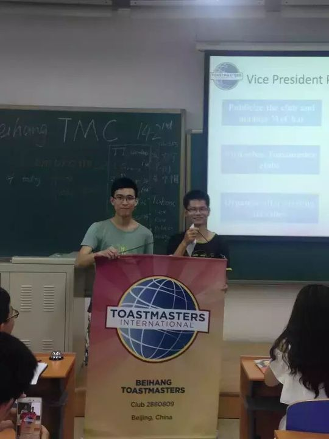
✓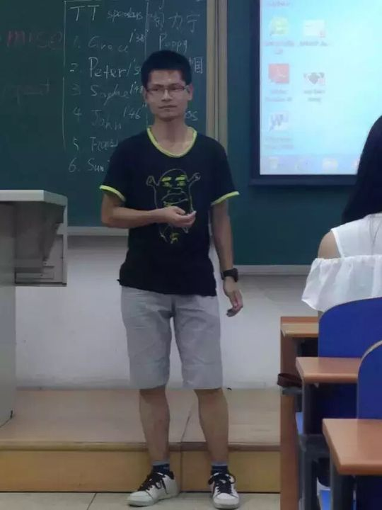
✓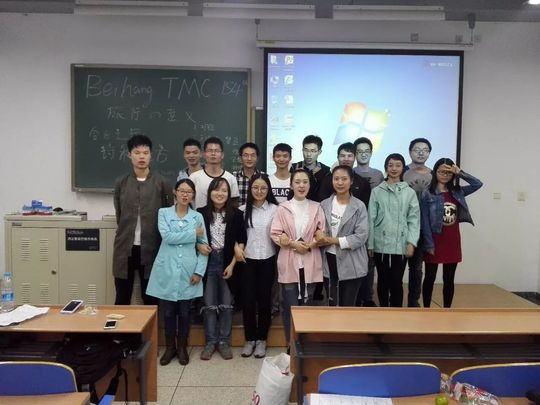
✓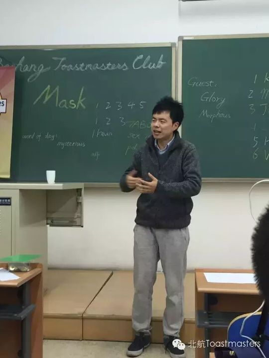
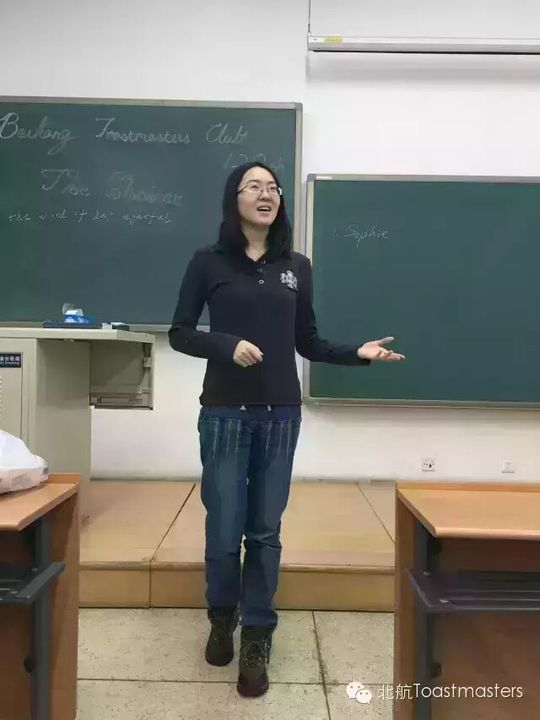
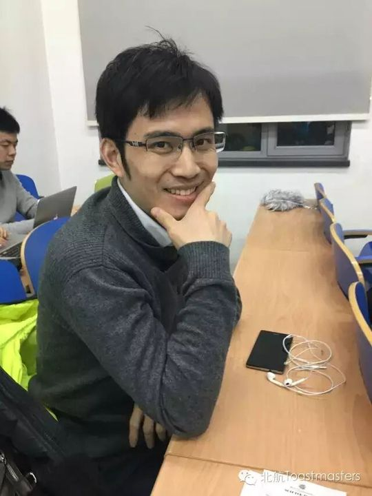
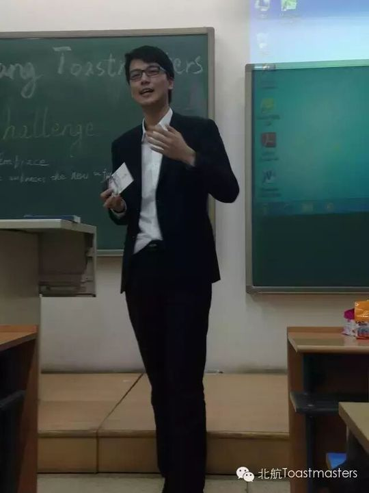
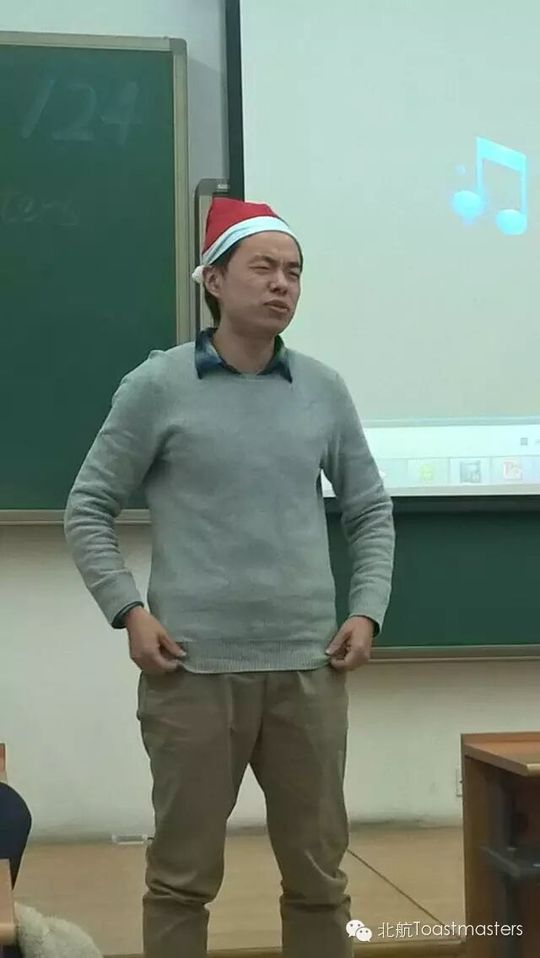
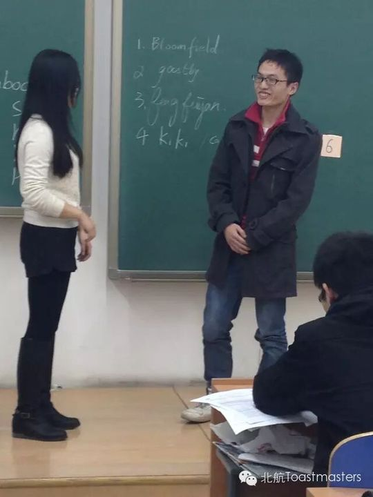
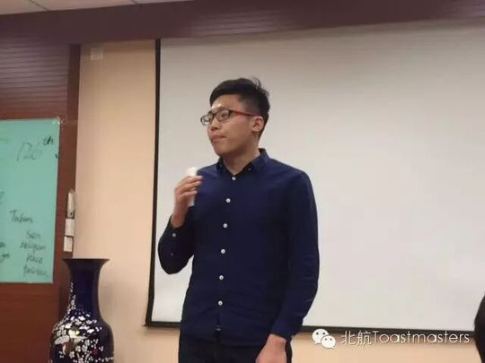
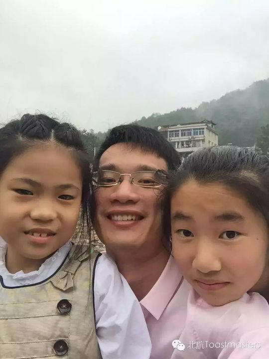
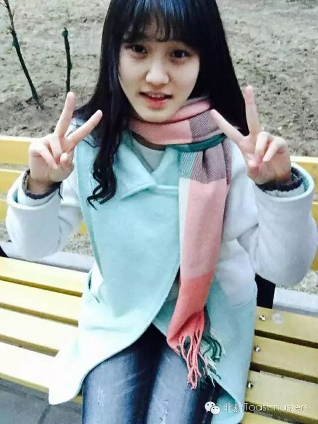
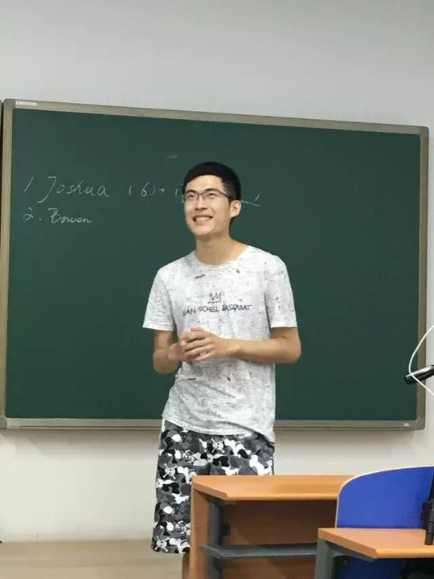
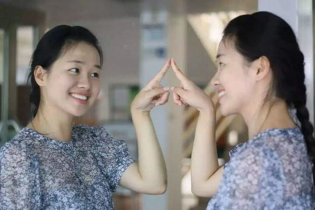
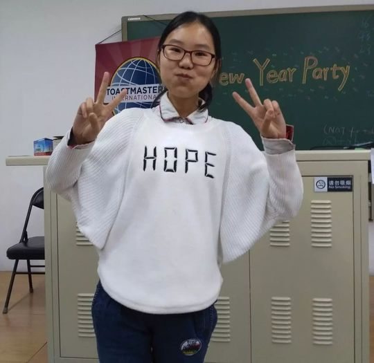